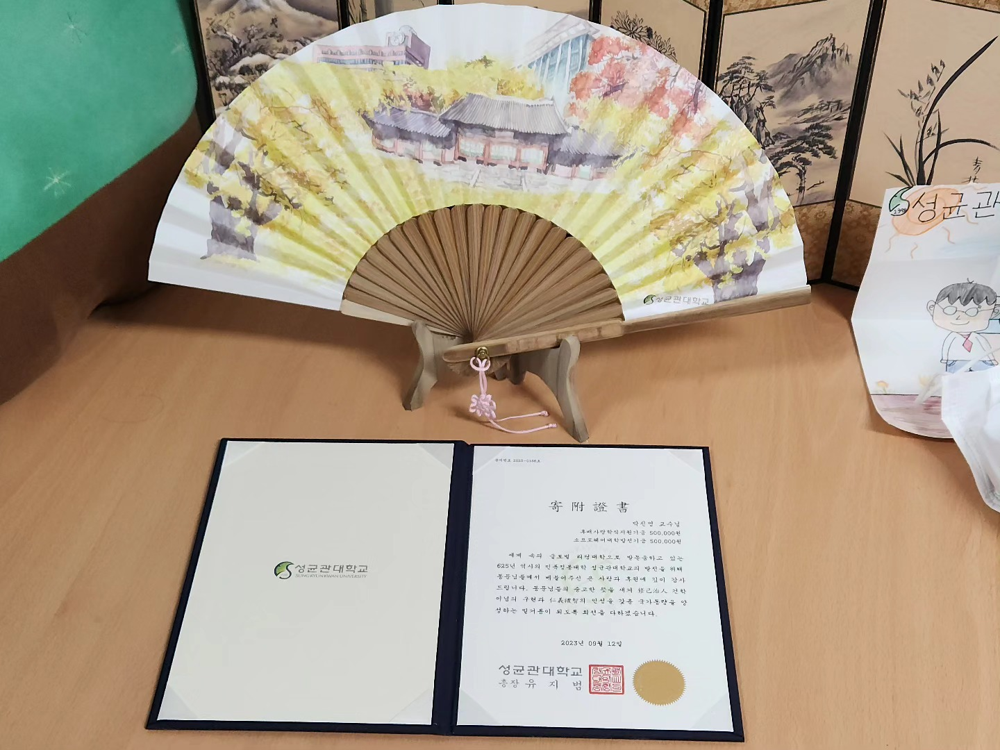

2023년은 2022년보다 더욱 정신이 없구나. 한 달 전의 얘기가 몇 달 전의 얘인 것 같고, 몇 달 전의 얘가 몇 년 전의 얘기 같으니 말이다. 작년의 생일 축하도 무언가 한참 전의 얘기 같은데 그래도 생일은 돌아오는구나.
이번에도 외국인 싱가포르와 인도네시아 자카르타에서 생일을 보냈구나. 특히 3개월 동안 인턴을 했던 곳에서 보내는 생일은 확실히 독특하기는 하구나.
어떠하든 생일이란 축하할 일이다.
생일을 핑계로 기부를 정리하는데 그리 특별한 것이 없구나.
하지만 이번 1학기에 갑자기 학교로부터 수업 관련하여 상금을 받게 되어 이를 전부 다시 학교에 반환했지. 그러했더니 이렇게 증서와 함께 부채 선물을 받은 것이 특별한 것이겠구나
생일은 축하해야하는 것이 맞지만 무언가 오늘 하루도 그렇게 지나가는 것 같구나.
다음에도 생일 축하를 할 수 있기를 바랄 뿐이다.